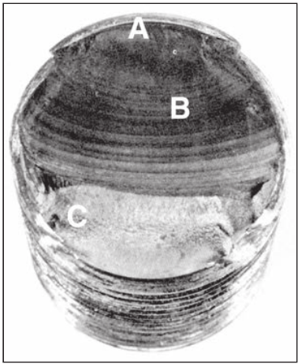
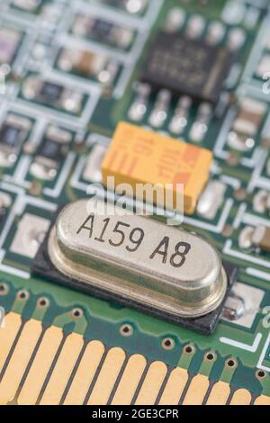
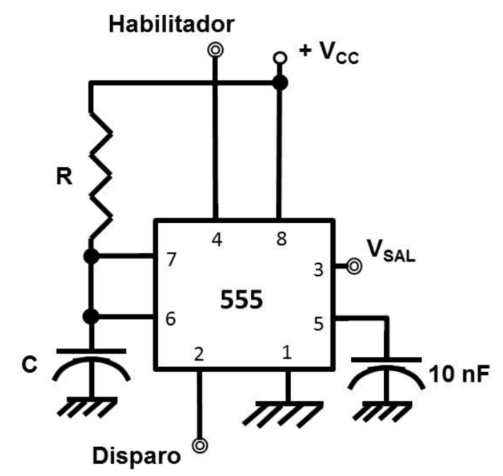
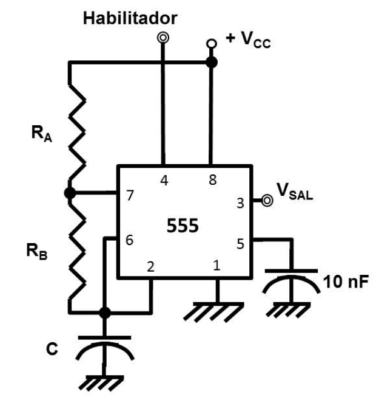

<style> .reveal section img { background:none; border:none; box-shadow:none; } #left { margin: 10px 0 15px 20px; text-align: center; float: left; z-index:-10; width:48%; font-size: 0.85em; line-height: 1.5; } #right { margin: 10px 0 15px 0; float: right; text-align: center; z-index:-10; width:48%; font-size: 0.85em; line-height: 1.5; } </style> # Unidad 4: Circuito Oscilador <font size=6> **Profesor:** Ing. Israel Chaves Arbaiza </font> <font size=6> **Curso**: Electrónica Básica </font> <img width="900" height="130" src="media/logo_slides.jpg"> --- ## Agenda <font size=6> * Concepto * Tipos * Biestables * Circuito integrado 555 * Monoestable * Astable </font> --- ## Concepto <font size=6> * Produce una señal periódica, típicamente senoidal ó cuadrada * Convierten la corriente directa (CD) a una señal de corriente alterna (CA) * Requieren una fuente de alimentación externa (todos los CI) * Generan señales emitidas por transmisores de radio y televisión, señales de reloj de computadoras, relojes de cuarzo, entre otros. </font> --- ## Concepto  --- ## Concepto <iframe width="800" height="500" src="https://www.falstad.com/circuit/circuitjs.html?ctz=CQAgjCAMB0l3BWK0BMBOBAWBYwJQOyRopiQEgDMAbCEgpHQKYC0uAUAE4hq0AcjXuBJQQmIpC4gUkPiAHTZwlKPHwplfPMaaVYEYzVwpmapm1izy1RPYBjHrX0qZc56LCs5MSmAK5ISl5qENkCFRg4MHsqLXdTc3dGTxY5VOgaXEpKSFNAlD5qCkjIaIB3RwtXC0kK6oVdGvYKxoUEpoAXWJdwy3NCCPAQFjRUdEo+TD4EIOogzAgWGBRMNEx1yCL0QJo+Sm1GABMmADMAQwBXABsO9i7qgcrH5OQEHDAFhbAUMzRp4ug1DAfAEBAImE2EIImQOIGO52utwqQncQhQCFotUUbhEjWezWx0l6jSSBPa8Ss6Mx7AA5k8QZVspioLS+tIGe0maJJAAlNltKyUQaGQTc17sGQUckiHB6ETmAD2Fw6AAdldFJZV4jiVIrlWqOih2ArwG5VMQ0OBGCVyHxvkhDKaqMIPJbKOwgA" title="Falstad" frameborder="0" allow="accelerometer; autoplay; clipboard-write; encrypted-media; gyroscope; picture-in-picture" allowfullscreen></iframe> [Ejemplo](https://www.falstad.com/circuit/circuitjs.html?ctz=CQAgjCAMB0l3BWK0BMBOBAWBYwJQOyRopiQEgDMAbCEgpHQKYC0uAUAE4hq0AcjXuBJQQmIpC4gUkPiAHTZwlKPHwplfPMaaVYEYzVwpmapm1izy1RPYBjHrX0qZc56LCs5MSmAK5ISl5qENkCFRg4MHsqLXdTc3dGTxY5VOgaXEpKSFNAlD5qCkjIaIB3RwtXC0kK6oVdGvYKxoUEpoAXWJdwy3NCCPAQFjRUdEo+TD4EIOogzAgWGBRMNEx1yCL0QJo+Sm1GABMmADMAQwBXABsO9i7qgcrH5OQEHDAFhbAUMzRp4ug1DAfAEBAImE2EIImQOIGO52utwqQncQhQCFotUUbhEjWezWx0l6jSSBPa8Ss6Mx7AA5k8QZVspioLS+tIGe0maJJAAlNltKyUQaGQTc17sGQUckiHB6ETmAD2Fw6AAdldFJZV4jiVIrlWqOih2ArwG5VMQ0OBGCVyHxvkhDKaqMIPJbKOwgA) --- ## Tipos de osciladores <font size=6> Los osciladores se caracterizan a menudo por la frecuencia de su señal de salida: * Un oscilador de baja frecuencia (LFO) es un oscilador electrónico que genera una frecuencia por debajo de ≈ 20Hz. Se utiliza típicamente en el campo de los sintetizadores de audio. * Un oscilador de audio produce frecuencias en el rango de audio, sobre 16Hz a 20kHz * Un oscilador de RF produce señales en la frecuencia de radio (RF) intervalo de aproximadamente 100kHz a 100GHz **Existen 2 tipos principales:** Oscilador lineal (armónico) ó No lineal (de relajación) </font> <!-- <div id="left"> <font size=6> <p style='text-align: justify;'> **Etapa 1:** Microgrietas, debido a la deformación plástica cíclica **Etapa 2:** Las microgrietas se convierten en macro. Y se forman mesetas paralelas, separadas por crestas longitudinales. **Etapa 3:** Ocurre en el ciclo de esfuerzo final, cuando la pieza ya no resiste cargas y falla. </p> </font> </div> <div id="right">  </div> --> --- ## Osciladores de relajación <font size=6> * Producen una señal de salida repetitiva no senoidal, tal como una onda triangular u onda cuadrada * Consta de un bucle de realimentación, con un dispositivo de conmutación tal como un transistor, un comparador, un relé, etc. * Esa conmutación carga un capacitor ó inductor hasta que se alcanza un nivel umbral, entonces se descarga de nuevo * El período del oscilador depende de la constante de tiempo $\tau $ del circuito del capacitor * La carga y descarga generan una onda discontinua en un intervalo de aproximadamente 100kHz a 100GHz </font> --- ## Osciladores de relajación <font size=6> Se dividen en 2 clases: <div id="left"> <p style="text-align: center;"> **Diente de sierra ó Flyback:** * El capacitor se carga lentamente * Luego se da una rápida descarga casi al instante * Así, sólo hay una *rampa* en la forma de onda de salida que ocupa prácticamente todo el período </p> </div> <div id="right"> **Multivibrador:** * El capacitor se carga y descarga lentamente * La forma de la onda de salida consta de dos partes: una rampa de aumento y una rampa decreciente </div> </font> --- ## Osciladores de relajación: Aplicaciones <font size=6> * Luces parpadeantes, generadores de funciones * Inversores y fuentes de alimentación conmutadas * Señales de reloj de circuitos digitales </font> <iframe width="400" height="400" src="https://theengineeringmindset.com/wp-content/uploads/2017/12/simple-inverter-circuit-animation.gif" title="Falstad" frameborder="0" allow="accelerometer; autoplay; clipboard-write; encrypted-media; gyroscope; picture-in-picture" allowfullscreen></iframe>  --- ## Osciladores de relajación <font size=6> * Se utilizan ampliamente * Más fáciles de diseñar que los osciladores lineales * Más fáciles de fabricar en los chips de circuitos integrados, ya que no requieren inductores * Se pueden ajustar en un amplio rango de frecuencias * Tienen más ruido de fase y una estabilidad de la frecuencia pobre respecto de los osciladores lineales * Actualmente son construidos con circuitos integrados dedicados como el chip temporizador 555 </font> --- ## Multivibrador <font size=6> Se basan en estados de las señales, estos estados se pueden memorizar, crear un pulso de temporización o un tren de pulsos * **Monoestable:** Genera un **único pulso**, al recibir un flanco adecuado, siempre y cuando esté habilitado. El pulso se puede temporizar. * **Astable:** Crea un **tren de pulsos** a una frecuencia fija, con un ciclo de trabajo fijo. * El ciclo de trabajo es el **porcentaje** de tiempo en que el pulso está en el nivel alto (*W*), comparado con el período de la señal (*T*) $$ D = \frac{W}{T}100 $$ </font> --- ## Multivibrador <font size=6> **Biestable:** También llamados **flip-flops**. Funcionan como memorias, que guardan niveles de voltaje. Esos niveles se representan en estados de las señales. Algunos biestables, son *síncronos*, es decir que guardan el estado en memoria, sólo cuando les llega una orden de un flanco de una señal de reloj (*CLK*) </font> --- ## Biestables: Flip-flop RS <font size=6> Es un flip-flop asíncrono, que guarda en la patilla *Q*, la orden que se le entrega en las patillas *SET* y *RESET* (de allí el nombre). </font>  --- ## Biestables: Flip-flop JK <font size=6> Es un flip-flop síncrono que guarda en la patilla *Q* la orden que se le entrega en las patillas, donde la *J* funciona como un *SET* y la *K* como un *RESET*, la diferencia es que no hay estado prohibido. </font>  --- ## Biestables: Flip-flop D <font size=6> Es un flip-flop síncrono que guarda en la patilla Q el estado de la patilla *D* </font>  --- ## Biestables: Flip-flop T <font size=6> Es un flip-flop síncrono que complementa el valor guardado en patilla *Q*, la *T* viene de la palabra en inglés toggle </font>  --- ## Circuito integrado 555 <font size=6> El oscilador 555 es un chip de ocho patillas que se puede usar, entre otras cosas, para construir astables y monoestables </font>  --- ## Circuito integrado 555 <font size=6> * Es un circuito integrado (chip) aplicado en la generación de pulsos y oscilaciones. * Desde 1971 sigue siendo implementado debido a su facilidad de uso, bajo costo y estabilidad. * Muchas empresas los fabrican en versión de transistores bipolares y en CMOS de baja potencia. </font>  <!-- ## Math cases This math is inline $ \sum_{\forall i}{x_i^{2}} $ This is on a separate line $$ a^2+b^2=c^2 $$ --> --- ## Circuito integrado 555 <font size=6> * Chip analógico-digital a base de comparadores analógicos y circuitos biestables digitales. * Una conexión en serie de 3 resistores, ajusta los niveles de referencia de los comparadores a $ \frac{2V_{CC}}{3}$ y $\frac{V_{CC}}{3}$, que a su vez ajustan la unidad biestable </font>  --- ## Circuito integrado 555 <iframe width="800" height="500" src="https://www.falstad.com/circuit/circuitjs.html?ctz=CQAgzCAMB0l3BWEDYCYyoOytQTgByaT74CMSAbACwibKTICmAtKaQFACGIqJIpFfOHw0BQ3PwYNS8eCCrRqmTGDCYEkKmVK9w0VQcNGIM2Vx59U1YTSs0JMqJNkMKiih89ev8xVWWq6prauqbw7ABOPFQMCBTR0ppOGnCRCZK2MfwIqMnhAO7p5LmoWbxSaaUM5ekYQrEFRTkWQsVQ7IVVGTzY3ZAdPbkytr01-Z2j+NWWU+2FVNakmPELori54zb8Iluk63O7+6vpm8ddZ3EHYDtd15n1A3fpx3sb7ABK6ZddAk4MWY4pFBoAgPiA+JdLDQgQCgVIQWkIfE+DogWF+lEUagGCidolGljqr9UQdUMTsTxfmBmptcTQoQ8AMbgoSlIR8akbcAsOgKJQqNQaLRsXQwOAcADmLPAzQ5gj+aSeYHlx2V9WcqXmi2W8lw8SW8VO1jVuviJv65AgT1Qlwu+p4Thk7Etux1Lx1pAdjid8z1-DdfvN7AA8sgKNIdRRiTqKoU6S1ttCBgyE2z2gAXcC6E14M3y6TAhDrXACwQlihqawwChWUgkZTh67LdTOEAAE0YADNOABXAA26YGZLNzVzMreUrH1r9MXVmzq4HlSvz7AAHvwKWwkHWHHX5Px4m2AJYAZ0ZAAtOBEJYw1xuHJhWphRGR9790xEjxKbxE7yTSkM+BIKUSCiPE6bnhEjAnueAD2fZtkOvTDIMWbtOuWAlLkGDVKBB4gIysEAHYfvB7AAEZhthuDVHA8ixrUui3HiQ5ZNOZosQAkqa-rxHEEaGoWkjsLBPAmIJMS4A48LinENpOCUVoieAnoYE4VAyPqMnwOWcnbvw7BAA" title="Falstad" frameborder="0" allow="accelerometer; autoplay; clipboard-write; encrypted-media; gyroscope; picture-in-picture" allowfullscreen></iframe> [Ejemplo](https://www.falstad.com/circuit/circuitjs.html?ctz=CQAgzCAMB0l3BWEDYCYyoOytQTgByaT74CMSAbACwibKTICmAtKaQFACGIqJIpFfOHw0BQ3PwYNS8eCCrRqmTGDCYEkKmVK9w0VQcNGIM2Vx59U1YTSs0JMqJNkMKiih89ev8xVWWq6prauqbw7ABOPFQMCBTR0ppOGnCRCZK2MfwIqMnhAO7p5LmoWbxSaaUM5ekYQrEFRTkWQsVQ7IVVGTzY3ZAdPbkytr01-Z2j+NWWU+2FVNakmPELori54zb8Iluk63O7+6vpm8ddZ3EHYDtd15n1A3fpx3sb7ABK6ZddAk4MWY4pFBoAgPiA+JdLDQgQCgVIQWkIfE+DogWF+lEUagGCidolGljqr9UQdUMTsTxfmBmptcTQoQ8AMbgoSlIR8akbcAsOgKJQqNQaLRsXQwOAcADmLPAzQ5gj+aSeYHlx2V9WcqXmi2W8lw8SW8VO1jVuviJv65AgT1Qlwu+p4Thk7Etux1Lx1pAdjid8z1-DdfvN7AA8sgKNIdRRiTqKoU6S1ttCBgyE2z2gAXcC6E14M3y6TAhDrXACwQlihqawwChWUgkZTh67LdTOEAAE0YADNOABXAA26YGZLNzVzMreUrH1r9MXVmzq4HlSvz7AAHvwKWwkHWHHX5Px4m2AJYAZ0ZAAtOBEJYw1xuHJhWphRGR9790xEjxKbxE7yTSkM+BIKUSCiPE6bnhEjAnueAD2fZtkOvTDIMWbtOuWAlLkGDVKBB4gIysEAHYfvB7AAEZhthuDVHA8ixrUui3HiQ5ZNOZosQAkqa-rxHEEaGoWkjsLBPAmIJMS4A48LinENpOCUVoieAnoYE4VAyPqMnwOWcnbvw7BAA) --- ## Monoestable <font size=6> Genera **un único pulso** </font>  --- ## Monoestable <font size=6> * Cada vez que le llegue un flanco negativo a la patilla de disparo * Mientras el pulso está activo, cualquier otro disparo es ignorado * **Importante:** El disparo debe regresar al nivel alto, antes de que termine el pulso </font> $$ W = T_{alto} = 1,1 RC $$  --- ## Monoestable <iframe width="800" height="500" src="https://www.falstad.com/circuit/circuitjs.html?ctz=CQAgjCAMB0l3BWcMBMcUHYMGZIA4UA2ATmIxAUIosgoFMBaMMAKDEKTT3ABYeRsaXv36QWAdxBdwGKtMwooEqfhlUwstUsnyetMCm4o92rRvWaFSgMZar5gUNox4cUu4+fSUWD2IJIPwCgwOJsCBdIVgBzLUF9TWxsKmcWACczTQdmRX14ZWyDKQxFHKUAJXBDcCKebjLnEBMkRpgEFgB5AWSVbj1aaVSMg3qikakTPLFJcbLC3JZbceNaPAHJn1cIzaiWABkQNYnaOuOocBAAFzSAVzpqMVjcfmeBQMdW5XsipPUi6e6f0Uvy0YgA9rwQIRRE0wJBFC1YPAyBxCCgWlJIdgWBC4VCYTw4bkkXBZCgwsQeAhwuidm5ZJRafoWAALTHkdpAA" title="Falstad" frameborder="0" allow="accelerometer; autoplay; clipboard-write; encrypted-media; gyroscope; picture-in-picture" allowfullscreen></iframe> [Ejemplo](https://www.falstad.com/circuit/circuitjs.html?ctz=CQAgjCAMB0l3BWcMBMcUHYMGZIA4UA2ATmIxAUIosgoFMBaMMAKDEKTT3ABYeRsaXv36QWAdxBdwGKtMwooEqfhlUwstUsnyetMCm4o92rRvWaFSgMZar5gUNox4cUu4+fSUWD2IJIPwCgwOJsCBdIVgBzLUF9TWxsKmcWACczTQdmRX14ZWyDKQxFHKUAJXBDcCKebjLnEBMkRpgEFgB5AWSVbj1aaVSMg3qikakTPLFJcbLC3JZbceNaPAHJn1cIzaiWABkQNYnaOuOocBAAFzSAVzpqMVjcfmeBQMdW5XsipPUi6e6f0Uvy0YgA9rwQIRRE0wJBFC1YPAyBxCCgWlJIdgWBC4VCYTw4bkkXBZCgwsQeAhwuidm5ZJRafoWAALTHkdpAA) --- ## Astable <font size=6> Genera un **tren de pulsos** </font>  --- ### Astable <font size=5> Utiliza un resistor y un capacitor externos para ajustar el intervalo de temporización de la salida </font> $$ f=\frac{1,44}{(R_{A}+2R_{B})C} $$ $$ D=\frac{R_{A}+R_{B}}{R_{A}+2R_{B}}100 $$ --- ## Astable <div id="left">  </div> <div id="right">  </div> --- ## Astable <iframe width="800" height="500" src="http://www.falstad.com/circuit/circuitjs.html?ctz=CQAgjCAMB0l3BWEAWaAOMaBMA2AnNnmJAdiAjueZOQKYC0YYAUGDklsjWFmiFhXC8UKaHnES8CePBYAlEAGZIyEHkrLVaGjpQ0kumAmYB5JTj5g8WFG3DWoUZgHd+XcDhpZIlz04BO-D4eXsHqjsqQLkF84ZpqlFGu3nwClJxeglEAxjH8gilKKo4wMpCK4Oh4yNraXDhcBMKlkCwA5nnxhYreJdGFWJx5aU7JwYOqGfxDUYGFbKGpM0VJRapxFgmj5rEamwtOHYqK6Wh8xxrFOsy5Iz2Ze3zcDOfQx+8fnwDsULCt0V0zvlTk9+gUgXdeqs7psTudNqs4TtkbxQa4LvwgUjUU4APb8EBPWyQGwGP5wPBfdg4ASOCC4gCuABcAA7M5hAA" title="Falstad" frameborder="0" allow="accelerometer; autoplay; clipboard-write; encrypted-media; gyroscope; picture-in-picture" allowfullscreen></iframe> [Ejemplo](http://www.falstad.com/circuit/circuitjs.html?ctz=CQAgjCAMB0l3BWEAWaAOMaBMA2AnNnmJAdiAjueZOQKYC0YYAUGDklsjWFmiFhXC8UKaHnES8CePBYAlEAGZIyEHkrLVaGjpQ0kumAmYB5JTj5g8WFG3DWoUZgHd+XcDhpZIlz04BO-D4eXsHqjsqQLkF84ZpqlFGu3nwClJxeglEAxjH8gilKKo4wMpCK4Oh4yNraXDhcBMKlkCwA5nnxhYreJdGFWJx5aU7JwYOqGfxDUYGFbKGpM0VJRapxFgmj5rEamwtOHYqK6Wh8xxrFOsy5Iz2Ze3zcDOfQx+8fnwDsULCt0V0zvlTk9+gUgXdeqs7psTudNqs4TtkbxQa4LvwgUjUU4APb8EBPWyQGwGP5wPBfdg4ASOCC4gCuABcAA7M5hAA) --- ## Ejemplo 1 <font size=5,7> Se requiere obtener una onda cuadrada de 20kHz, a la cual se le pueda variar el ciclo de trabajo entre 0 y 85 $ \% $. Dimensione el siguiente circuito para cumplir con lo especificado. </font>  --- ## Ejemplo 2 <font size=5,7> Si la señal **Data** tiene un perı́odo de $ T = 1s $ y un ciclo de trabajo de $ D = 60 \%$, obtenga las gráficas de salida $ Q_1 $ y $ Q_3 $. Tome en cuenta que la señal de entrada, **entra** de forma negada (cuando la señal original es un alto, la negada será un bajo y viceversa) a la patilla $ K $ del Flip Flop 1. </font>